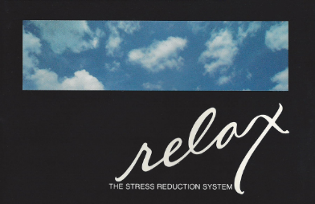
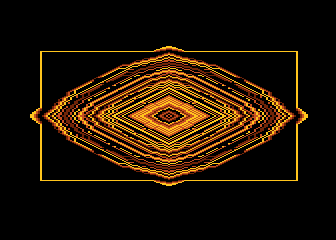
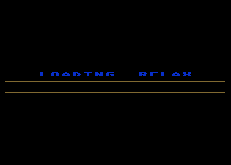

Synapse Relax Stress Reduction System
A video-game company built the first FDA-cleared biofeedback peripheral for home computers—and it almost worked

Overview
The Relax Stress Reduction System was a multi-component biofeedback package for home computers, released in 1984 by Synapse Software—a company better known for arcade-style action games like Blue Max, Shamus, and Alley Cat. The system included an elastic EMG (electromyography) headband with three sensors that pressed against the forehead's frontalis muscle, a control unit that amplified and conditioned the microvolt-level muscle signals, and software on floppy disk or cassette for the Atari 8-bit, Commodore 64, Apple II, and IBM PC platforms.
The software offered three modes: a real-time scrolling tension graph, a kaleidoscopic biofeedback display that shifted from soothing blue-green patterns to jagged red-orange shapes as tension increased, and a balloon-flying game where relaxing made the balloon float higher and tensing made it descend—subtle changes earned more points, training users to recognize fine gradations of stress. A 25-minute guided relaxation audiocassette and a workbook by clinical psychologist Dr. Martha Davis completed the package.
The entire system received FDA 510(k) clearance (K841128) as a Class II neurological biofeedback device in July 1984—an extraordinary achievement for a consumer software company. Yet Synapse Software was collapsing financially due to a disastrous Atari inventory dispute and was acquired by Broderbund later that same year. Relax became one of the rarest computer peripherals ever produced, with very few complete boxed copies known to survive.
Deep dive
Synapse Software was founded in 1981 by Ihor Wolosenko and Ken Grant in Richmond, California. The company built a reputation for technically polished, visually striking Atari 8-bit action games. By 1984, Synapse was diversifying into productivity software (SynCalc, SynFile+) and looking for new markets. Relax represented the company's audacious bet that home computers could be wellness devices—a product category that would not truly arrive for another 25 years. The project brought together three unlikely collaborators: Kelly Jones (programmer of the Atari game Drelbs), Bill Williams (the legendary designer of Necromancer and Alley Cat, who later created groundbreaking Amiga titles like Mind Walker), and Dr. Martha Davis, a clinical psychologist at Kaiser Permanente who wrote the workbook and helped design the stress-profiling methodology.
The EMG headband positioned three sensors against the user's forehead to detect electrical activity in the frontalis muscle—a reliable indicator of general tension. When muscles contract, they generate microvolt-level electrical potentials. The control unit amplified and conditioned these signals, then fed them into the computer through the joystick port (on Atari/C64) or game controller adapter (on IBM PC). The software interpreted the analog signal strength as a continuous 'tension level.' A variable sample rate allowed both momentary stress-spike detection and long-term baseline monitoring. The balloon game's scoring deliberately rewarded subtle tension changes over dramatic ones, training users to perceive fine bodily cues. The headband could also substitute for paddle controllers in other Synapse games like Chicken.
Relax launched at $139.95 (about $420 today) at the worst possible moment. Atari Inc., under new owner Jack Tramiel, refused to pay Synapse for approximately 40,000 already-shipped software units, plunging the company into financial crisis. Synapse was acquired by Broderbund in late 1984, and the label was retired within a year. Relax became a Rarity 9 item on AtariMania—fewer than a handful of complete boxed copies are known. One is preserved at The Strong National Museum of Play in Rochester, New York, donated by Broderbund co-founder Doug Carlston. A complete unit with headband hardware remains one of the great white whales of retro computing collecting.
Relax was simultaneously ahead of its time and a product of its era. It anticipated the consumer biofeedback wearables that would explode in the 2010s (Muse, NeuroSky, Fitbit's stress tracking), yet it was built for 8-bit home computers with joystick-port interfaces. The FDA clearance—an extraordinary regulatory achievement for a game company—validated the concept of the home computer as a therapeutic platform. Bill Williams, who co-created it, would go on to make some of the most visually and mechanically inventive Amiga games before leaving the industry, attending seminary, and dying of cystic fibrosis at age 37. His involvement gives Relax a human story as compelling as its technical ambition.
Team & pioneers
- Kelly Jones. Atari 8-bit programmer at Synapse; created Drelbs (1983); co-designed Relax as programming lead
- Bill Williams. Legendary game designer (Necromancer, Alley Cat, Mind Walker); co-designed Relax; later left industry for seminary; died of cystic fibrosis at 37 in 1998
- Dr. Martha Davis. Clinical psychologist at Kaiser Permanente; wrote Relax workbook and guided relaxation audio; co-author of The Relaxation and Stress Reduction Workbook
- Synapse Software. Publisher founded 1981 by Ihor Wolosenko and Ken Grant; known for Atari 8-bit action games; acquired by Broderbund 1984
Media


Sources
- Wikipedia: Relax (software)
- COMPUTE! Magazine Issue 60 (May 1985) Review
- FDA 510(k) K841128 Clearance
- AtariMania: Relax entry with manual, screenshots, audio
- Google Arts & Culture: The Strong Museum artifact
- Bill Williams biography (The Digital Antiquarian)
- COMPUTE! Issue 50 (July 1984) Product Announcement